2025 Advanced Higher Biology - Paper 2 questions
Source: Scottish Qualifications Authority (SQA) / Qualifications Scotland. This is a StemInteract HTML companion, not an official HTML edition. Selectable text is supplied alongside original page images. Use the images or original PDF for equations, powers, fractions, vector notation, tables and diagrams; text extraction cannot fully preserve mathematical layout.
Jump to a question
PDF page 1
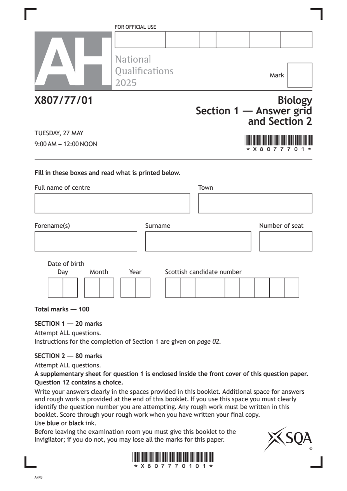
Selectable page text
FOR OFFICIAL USE
AH
National
Qualications
Mark
2025
X807/77/01 Biology
Section 1 — Answer grid
and Section 2
TUESDAY, 27 MAY
9:00 AM – 12:00 NOON
*X8077701*
Fill in these boxes and read what is printed below.
Full name of centre Town
Forename(s) Surname Number of seat
Date of birth
Day Month Year Scottish candidate number
Total marks — 100
SECTION 1 — 20 marks
Attempt ALL questions.
Instructions for the completion of Section 1 are given on page 02.
SECTION 2 — 80 marks
Attempt ALL questions.
A supplementary sheet for question 1 is enclosed inside the front cover of this question paper.
Question 12 contains a choice.
Write your answers clearly in the spaces provided in this booklet. Additional space for answers
and rough work is provided at the end of this booklet. If you use this space you must clearly
identify the question number you are attempting. Any rough work must be written in this
booklet. Score through your rough work when you have written your final copy.
Use blue or black ink.
Before leaving the examination room you must give this booklet to the
Invigilator; if you do not, you may lose all the marks for this paper.
©
*X807770101*
A/PBPDF page 2

Selectable page text
SECTION 1 — 20 marks
The questions for Section 1 are contained in the question paper X807/77/02.
Read these and record your answers on the answer grid on page 03 opposite.
Use blue or black ink. Do NOT use gel pens or pencil.
1. The answer to each question is either A, B, C or D. Decide what your answer is, then fill in
the appropriate bubble (see sample question below).
2. There is only one correct answer to each question.
3. Any rough working should be done on the additional space for answers and rough work at
the end of this booklet.
Sample question
The thigh bone is called the
A humerus
B femur
C tibia
D fibula.
The correct answer is B — femur. The answer B bubble has been clearly filled in (see below).
A B C D
Changing an answer
If you decide to change your answer, cancel your first answer by putting a cross through it (see
below) and fill in the answer you want. The answer below has been changed to D.
A B C D
If you then decide to change back to an answer you have already scored out, put a tick (✓) to the
right of the answer you want, as shown below:
A B C D A B C D
or
*X807770102*
page 02PDF page 3

Selectable page text
SECTION 1 — Answer grid
*OBJ20AD1*
A B C D
1
2
3
4
5
6
7
8
9
10
11
12
13
14
15
16
17
18
19
20
*X807770103*
page 03 [Turn overPDF page 4

Selectable page text
[BLANK PAGE]
DO NOT WRITE ON THIS PAGE
*X807770104*
page 04PDF page 5

Selectable page text
[Turn over for next question
DO NOT WRITE ON THIS PAGE
*X807770105*
page 05PDF page 6
Paper 2, Question 1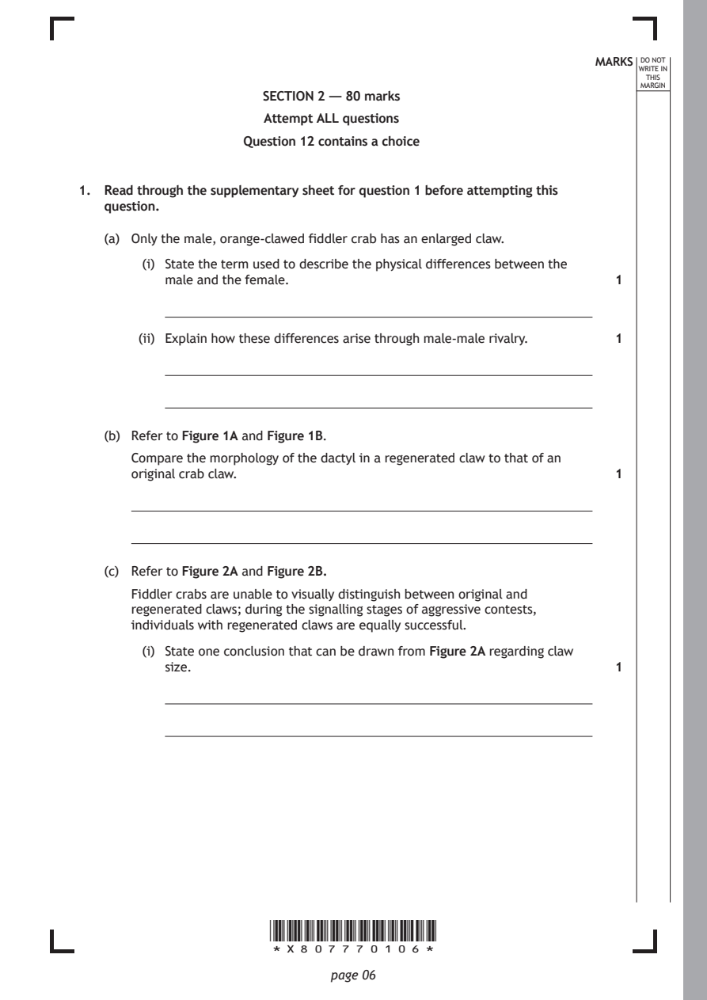
Selectable page text
MARKS _{W}^{D}_{R}^{O}_{I} _{T}^{N}OT
E IN
THIS
MARGIN
SECTION 2 — 80 marks
Attempt ALL questions
Question 12 contains a choice
1. Read through the supplementary sheet for question 1 before attempting this
question.
(a) Only the male, orange‑clawed fiddler crab has an enlarged claw.
(i) State the term used to describe the physical differences between the
male and the female. 1
(ii) Explain how these differences arise through male‑male rivalry. 1
(b) Refer to Figure 1A and Figure 1B.
Compare the morphology of the dactyl in a regenerated claw to that of an
original crab claw. 1
(c) Refer to Figure 2A and Figure 2B.
Fiddler crabs are unable to visually distinguish between original and
regenerated claws; during the signalling stages of aggressive contests,
individuals with regenerated claws are equally successful.
(i) State one conclusion that can be drawn from Figure 2A regarding claw
size. 1
*X807770106*
page 06PDF page 7
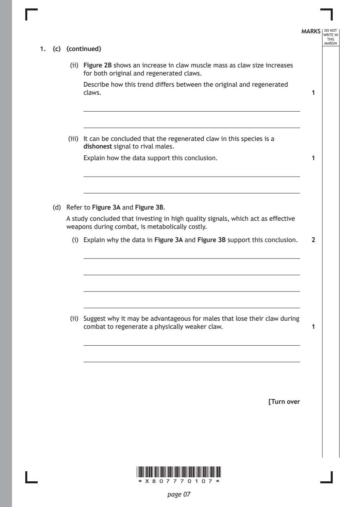
Selectable page text
MARKS _{W}^{D}_{R}^{O}_{I} _{T}^{N}OT
E IN
THIS
MARGIN
1. (c) (continued)
(ii) Figure 2B shows an increase in claw muscle mass as claw size increases
for both original and regenerated claws.
Describe how this trend differs between the original and regenerated
claws. 1
(iii) It can be concluded that the regenerated claw in this species is a
dishonest signal to rival males.
Explain how the data support this conclusion. 1
(d) Refer to Figure 3A and Figure 3B.
A study concluded that investing in high quality signals, which act as effective
weapons during combat, is metabolically costly.
(i) Explain why the data in Figure 3A and Figure 3B support this conclusion. 2
(ii) Suggest why it may be advantageous for males that lose their claw during
combat to regenerate a physically weaker claw. 1
[Turn over
*X807770107*
page 07PDF page 8
Paper 2, Question 2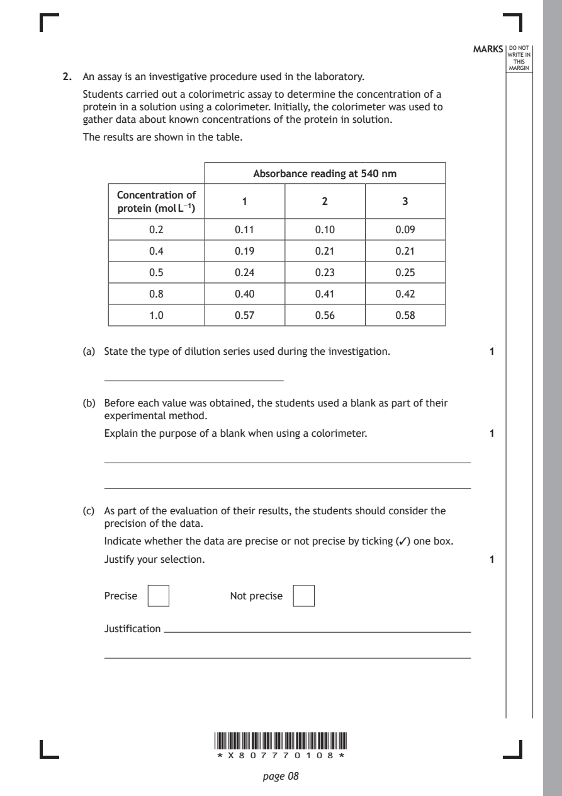
Selectable page text
MARKS _{W}^{D}_{R}^{O}_{I} _{T}^{N}OT
E IN
THIS
MARGIN
2. An assay is an investigative procedure used in the laboratory.
Students carried out a colorimetric assay to determine the concentration of a
protein in a solution using a colorimeter. Initially, the colorimeter was used to
gather data about known concentrations of the protein in solution.
The results are shown in the table.
Absorbance reading at 540 nm
Concentration of
1 2 3
protein (mol L⁻¹)
0.2 0.11 0.10 0.09
0.4 0.19 0.21 0.21
0.5 0.24 0.23 0.25
0.8 0.40 0.41 0.42
1.0 0.57 0.56 0.58
(a) State the type of dilution series used during the investigation. 1
(b) Before each value was obtained, the students used a blank as part of their
experimental method.
Explain the purpose of a blank when using a colorimeter. 1
(c) As part of the evaluation of their results, the students should consider the
precision of the data.
Indicate whether the data are precise or not precise by ticking (✓) one box.
Justify your selection. 1
Precise Not precise
Justification
*X807770108*
page 08PDF page 9
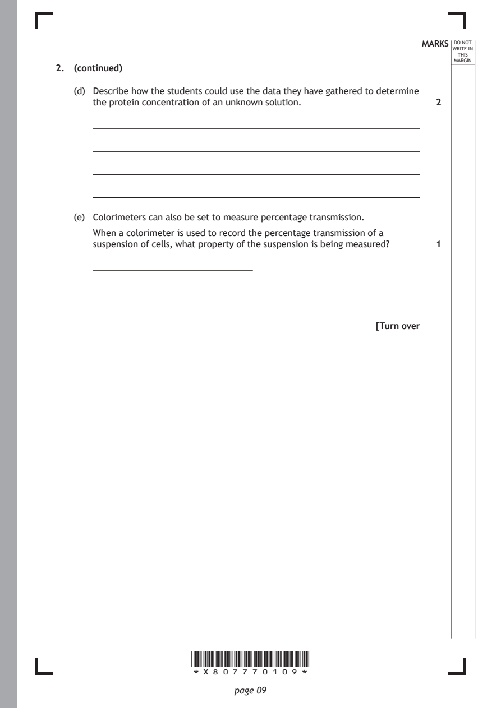
Selectable page text
MARKS _{W}^{D}_{R}^{O}_{I} _{T}^{N}OT
E IN
THIS
MARGIN
2. (continued)
(d) Describe how the students could use the data they have gathered to determine
the protein concentration of an unknown solution. 2
(e) Colorimeters can also be set to measure percentage transmission.
When a colorimeter is used to record the percentage transmission of a
suspension of cells, what property of the suspension is being measured? 1
[Turn over
*X807770109*
page 09PDF page 10
Paper 2, Question 3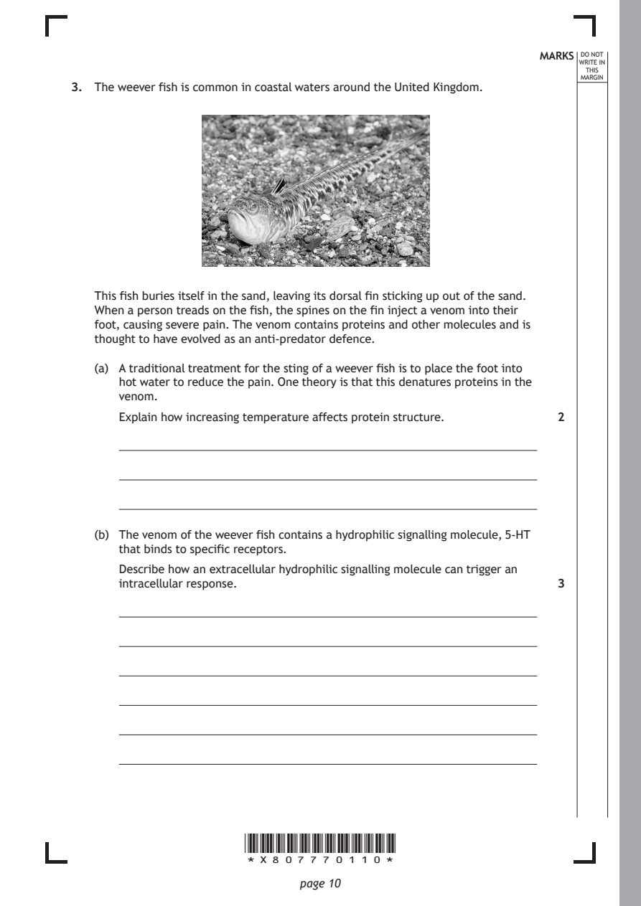
Selectable page text
MARKS _{W}^{D}_{R}^{O}_{I} _{T}^{N}OT
E IN
THIS
MARGIN
3. The weever fish is common in coastal waters around the United Kingdom.
This fish buries itself in the sand, leaving its dorsal fin sticking up out of the sand.
When a person treads on the fish, the spines on the fin inject a venom into their
foot, causing severe pain. The venom contains proteins and other molecules and is
thought to have evolved as an anti‑predator defence.
(a) A traditional treatment for the sting of a weever fish is to place the foot into
hot water to reduce the pain. One theory is that this denatures proteins in the
venom.
Explain how increasing temperature affects protein structure. 2
(b) The venom of the weever fish contains a hydrophilic signalling molecule, 5‑HT
that binds to specific receptors.
Describe how an extracellular hydrophilic signalling molecule can trigger an
intracellular response. 3
*X807770110*
page 10PDF page 11
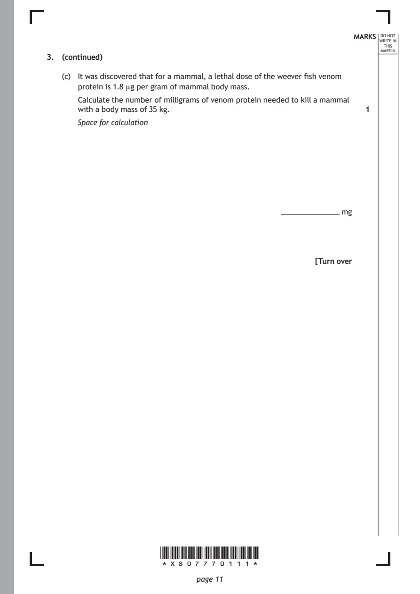
Selectable page text
MARKS _{W}^{D}_{R}^{O}_{I} _{T}^{N}OT
E IN
THIS
MARGIN
3. (continued)
(c) It was discovered that for a mammal, a lethal dose of the weever fish venom
protein is 1.8 µg per gram of mammal body mass.
Calculate the number of milligrams of venom protein needed to kill a mammal
with a body mass of 35 kg. 1
Space for calculation
��������������������������� mg
[Turn over
*X807770111*
page 11PDF page 12
Paper 2, Question 4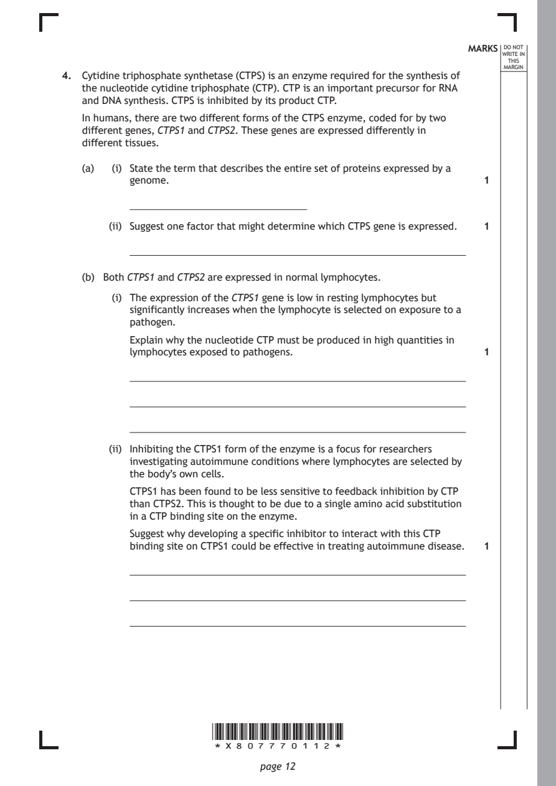
Selectable page text
MARKS _{W}^{D}_{R}^{O}_{I} _{T}^{N}OT
E IN
THIS
MARGIN
4. Cytidine triphosphate synthetase (CTPS) is an enzyme required for the synthesis of
the nucleotide cytidine triphosphate (CTP). CTP is an important precursor for RNA
and DNA synthesis. CTPS is inhibited by its product CTP.
In humans, there are two different forms of the CTPS enzyme, coded for by two
different genes, CTPS1 and CTPS2. These genes are expressed differently in
different tissues.
(a) (i) State the term that describes the entire set of proteins expressed by a
genome. 1
(ii) Suggest one factor that might determine which CTPS gene is expressed. 1
(b) Both CTPS1 and CTPS2 are expressed in normal lymphocytes.
(i) The expression of the CTPS1 gene is low in resting lymphocytes but
significantly increases when the lymphocyte is selected on exposure to a
pathogen.
Explain why the nucleotide CTP must be produced in high quantities in
lymphocytes exposed to pathogens. 1
(ii) Inhibiting the CTPS1 form of the enzyme is a focus for researchers
investigating autoimmune conditions where lymphocytes are selected by
the body’s own cells.
CTPS1 has been found to be less sensitive to feedback inhibition by CTP
than CTPS2. This is thought to be due to a single amino acid substitution
in a CTP binding site on the enzyme.
Suggest why developing a specific inhibitor to interact with this CTP
binding site on CTPS1 could be effective in treating autoimmune disease. 1
*X807770112*
page 12PDF page 13
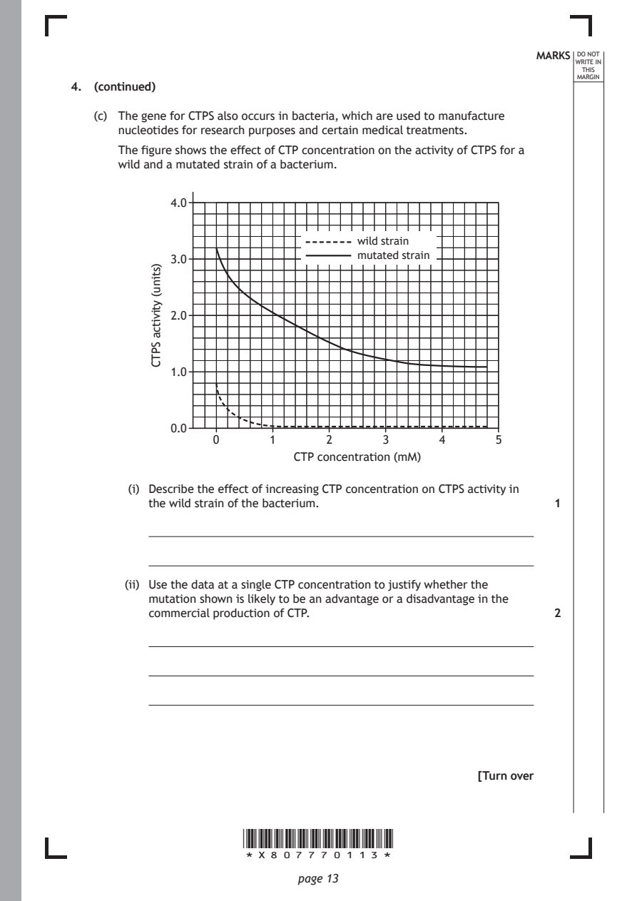
Selectable page text
MARKS _{W}^{D}_{R}^{O}_{I} _{T}^{N}OT
E IN
THIS
MARGIN
4. (continued)
(c) The gene for CTPS also occurs in bacteria, which are used to manufacture
nucleotides for research purposes and certain medical treatments.
The figure shows the effect of CTP concentration on the activity of CTPS for a
wild and a mutated strain of a bacterium.
4.0
wild strain
mutated strain
3.0
2.0
1.0
0.0
0 1 2 3 4 5
CTP concentration (mM)
*X807770113*
page 13
)stinu(
ytivitca
SPTC
(i) Describe the effect of increasing CTP concentration on CTPS activity in
the wild strain of the bacterium. 1
(ii) Use the data at a single CTP concentration to justify whether the
mutation shown is likely to be an advantage or a disadvantage in the
commercial production of CTP. 2
[Turn overPDF page 14
Paper 2, Question 5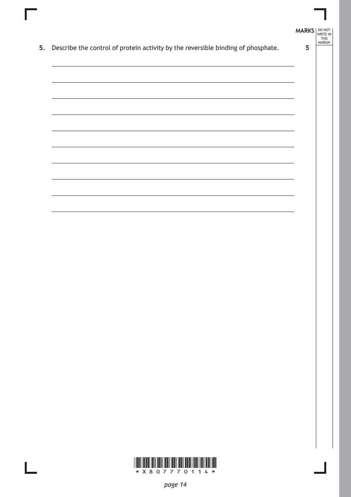
Selectable page text
MARKS _{W}^{D}_{R}^{O}_{I} _{T}^{N}OT
E IN
THIS
ARGIN
5. Describe the control of protein activity by the reversible binding of phosphate. 5 ^{M}
*X807770114*
page 14PDF page 15
Paper 2, Question 6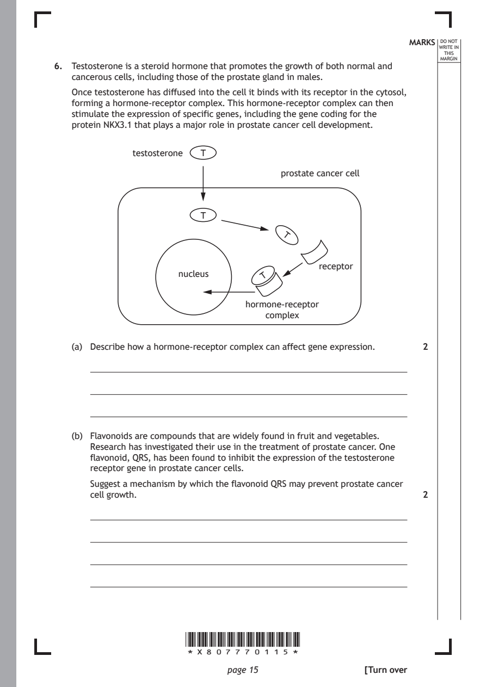
Selectable page text
MARKS _{W}^{D}_{R}^{O}_{I} _{T}^{N}OT
E IN
THIS
MARGIN
6. Testosterone is a steroid hormone that promotes the growth of both normal and
cancerous cells, including those of the prostate gland in males.
Once testosterone has diffused into the cell it binds with its receptor in the cytosol,
forming a hormone‑receptor complex. This hormone‑receptor complex can then
stimulate the expression of specific genes, including the gene coding for the
protein NKX3.1 that plays a major role in prostate cancer cell development.
testosterone T
prostate cancer cell
T
T
receptor
nucleus T
hormone-receptor
complex
(a) Describe how a hormone‑receptor complex can affect gene expression. 2
(b) Flavonoids are compounds that are widely found in fruit and vegetables.
Research has investigated their use in the treatment of prostate cancer. One
flavonoid, QRS, has been found to inhibit the expression of the testosterone
receptor gene in prostate cancer cells.
Suggest a mechanism by which the flavonoid QRS may prevent prostate cancer
cell growth. 2
*X807770115*
page 15 [Turn overPDF page 16
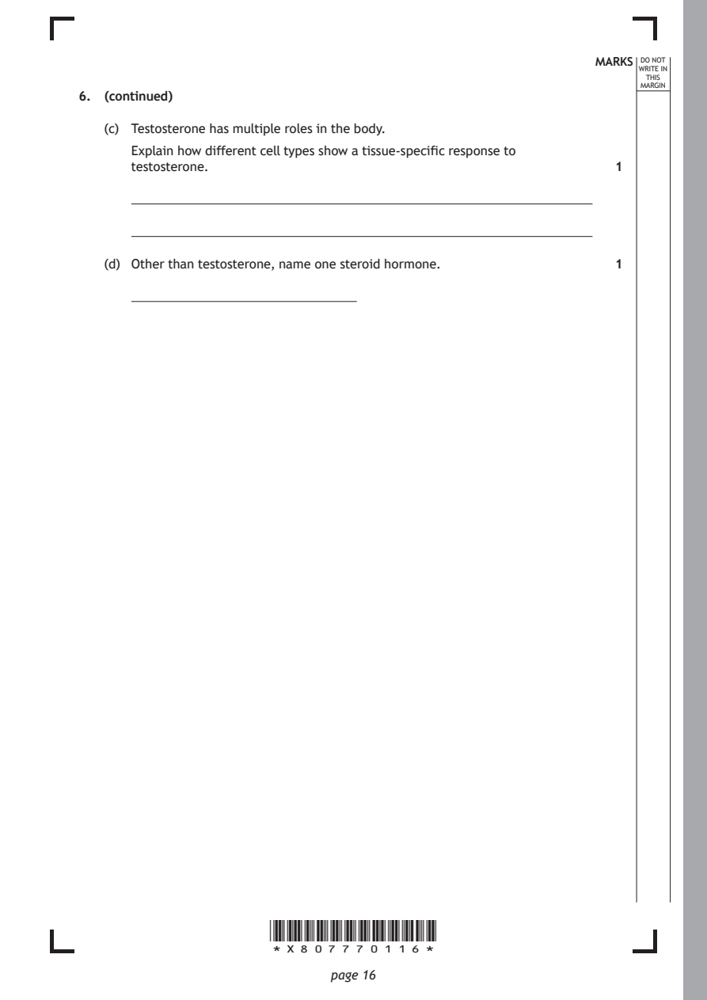
Selectable page text
MARKS _{W}^{D}_{R}^{O}_{I} _{T}^{N}OT
E IN
THIS
MARGIN
6. (continued)
(c) Testosterone has multiple roles in the body.
Explain how different cell types show a tissue‑specific response to
testosterone. 1
(d) Other than testosterone, name one steroid hormone. 1
*X807770116*
page 16PDF page 17
Paper 2, Question 7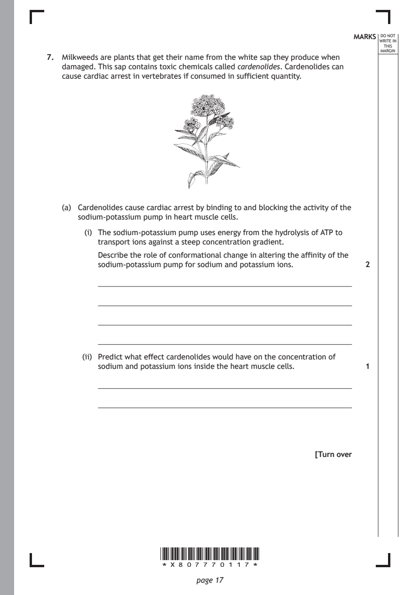
Selectable page text
MARKS _{W}^{D}_{R}^{O}_{I} _{T}^{N}OT
E IN
THIS
MARGIN
7. Milkweeds are plants that get their name from the white sap they produce when
damaged. This sap contains toxic chemicals called cardenolides. Cardenolides can
cause cardiac arrest in vertebrates if consumed in sufficient quantity.
(a) Cardenolides cause cardiac arrest by binding to and blocking the activity of the
sodium‑potassium pump in heart muscle cells.
(i) The sodium‑potassium pump uses energy from the hydrolysis of ATP to
transport ions against a steep concentration gradient.
Describe the role of conformational change in altering the affinity of the
sodium‑potassium pump for sodium and potassium ions. 2
(ii) Predict what effect cardenolides would have on the concentration of
sodium and potassium ions inside the heart muscle cells. 1
[Turn over
*X807770117*
page 17PDF page 18
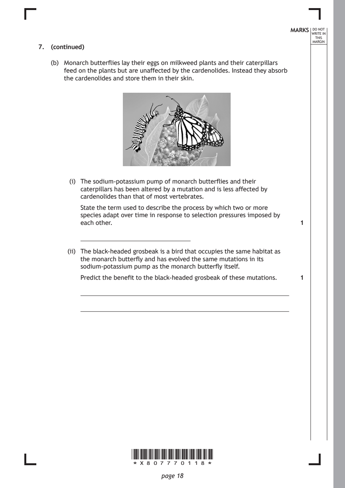
Selectable page text
MARKS _{W}^{D}_{R}^{O}_{I} _{T}^{N}OT
E IN
THIS
MARGIN
7. (continued)
(b) Monarch butterflies lay their eggs on milkweed plants and their caterpillars
feed on the plants but are unaffected by the cardenolides. Instead they absorb
the cardenolides and store them in their skin.
(i) The sodium‑potassium pump of monarch butterflies and their
caterpillars has been altered by a mutation and is less affected by
cardenolides than that of most vertebrates.
State the term used to describe the process by which two or more
species adapt over time in response to selection pressures imposed by
each other. 1
(ii) The black‑headed grosbeak is a bird that occupies the same habitat as
the monarch butterfly and has evolved the same mutations in its
sodium‑potassium pump as the monarch butterfly itself.
Predict the benefit to the black‑headed grosbeak of these mutations. 1
*X807770118*
page 18PDF page 19
Paper 2, Question 8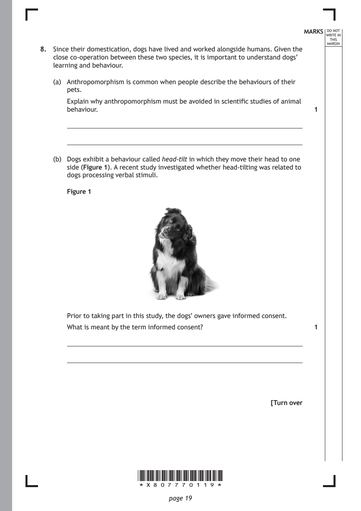
Selectable page text
MARKS _{W}^{D}_{R}^{O}_{I} _{T}^{N}OT
E IN
THIS
MARGIN
8. Since their domestication, dogs have lived and worked alongside humans. Given the
close co‑operation between these two species, it is important to understand dogs’
learning and behaviour.
(a) Anthropomorphism is common when people describe the behaviours of their
pets.
Explain why anthropomorphism must be avoided in scientific studies of animal
behaviour. 1
(b) Dogs exhibit a behaviour called head‑tilt in which they move their head to one
side (Figure 1). A recent study investigated whether head‑tilting was related to
dogs processing verbal stimuli.
Figure 1
Prior to taking part in this study, the dogs’ owners gave informed consent.
What is meant by the term informed consent? 1
[Turn over
*X807770119*
page 19PDF page 20
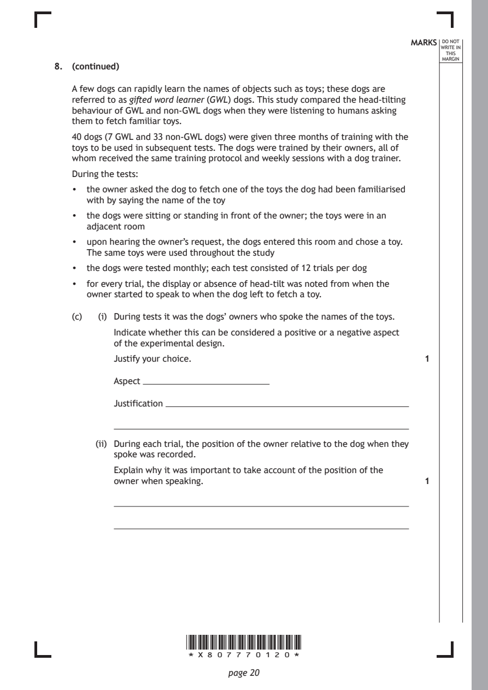
Selectable page text
MARKS _{W}^{D}_{R}^{O}_{I} _{T}^{N}OT
E IN
THIS
MARGIN
8. (continued)
A few dogs can rapidly learn the names of objects such as toys; these dogs are
referred to as gifted word learner (GWL) dogs. This study compared the head‑tilting
behaviour of GWL and non‑GWL dogs when they were listening to humans asking
them to fetch familiar toys.
40 dogs (7 GWL and 33 non‑GWL dogs) were given three months of training with the
toys to be used in subsequent tests. The dogs were trained by their owners, all of
whom received the same training protocol and weekly sessions with a dog trainer.
During the tests:
• the owner asked the dog to fetch one of the toys the dog had been familiarised
with by saying the name of the toy
• the dogs were sitting or standing in front of the owner; the toys were in an
adjacent room
• upon hearing the owner’s request, the dogs entered this room and chose a toy.
The same toys were used throughout the study
• the dogs were tested monthly; each test consisted of 12 trials per dog
• for every trial, the display or absence of head‑tilt was noted from when the
owner started to speak to when the dog left to fetch a toy.
(c) (i) During tests it was the dogs’ owners who spoke the names of the toys.
Indicate whether this can be considered a positive or a negative aspect
of the experimental design.
Justify your choice. 1
Aspect
Justification
(ii) During each trial, the position of the owner relative to the dog when they
spoke was recorded.
Explain why it was important to take account of the position of the
owner when speaking. 1
*X807770120*
page 20PDF page 21
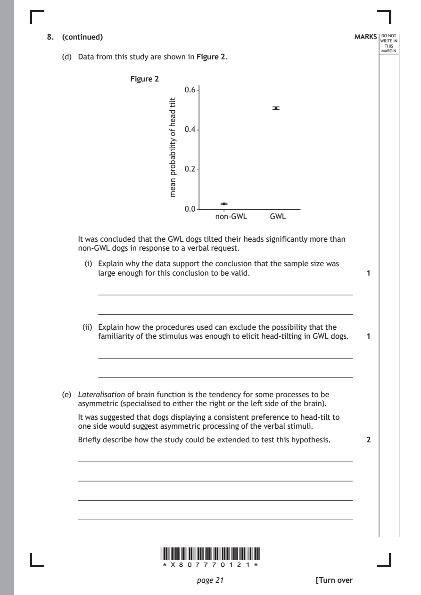
Selectable page text
8. (continued) MARKS _{W}^{D}_{R}^{O}_{I} _{T}^{N}OT
E IN
THIS
MARGIN
(d) Data from this study are shown in Figure 2.
*X807770121*
page 21
tlit
daeh
fo
ytilibaborp
naem
Figure 2
0.6
0.4
0.2
0.0
non-GWL GWL
It was concluded that the GWL dogs tilted their heads significantly more than
non‑GWL dogs in response to a verbal request.
(i) Explain why the data support the conclusion that the sample size was
large enough for this conclusion to be valid. 1
(ii) Explain how the procedures used can exclude the possibility that the
familiarity of the stimulus was enough to elicit head‑tilting in GWL dogs. 1
(e) Lateralisation of brain function is the tendency for some processes to be
asymmetric (specialised to either the right or the left side of the brain).
It was suggested that dogs displaying a consistent preference to head‑tilt to
one side would suggest asymmetric processing of the verbal stimuli.
Briefly describe how the study could be extended to test this hypothesis. 2
[Turn overPDF page 22
Paper 2, Question 9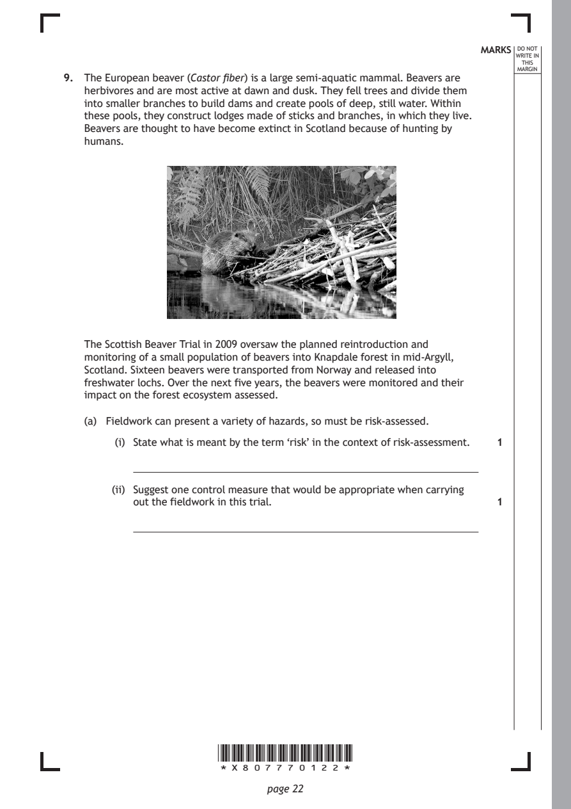
Selectable page text
MARKS _{W}^{D}_{R}^{O}_{I} _{T}^{N}OT
E IN
THIS
MARGIN
9. The European beaver (Castor fiber) is a large semi‑aquatic mammal. Beavers are
herbivores and are most active at dawn and dusk. They fell trees and divide them
into smaller branches to build dams and create pools of deep, still water. Within
these pools, they construct lodges made of sticks and branches, in which they live.
Beavers are thought to have become extinct in Scotland because of hunting by
humans.
The Scottish Beaver Trial in 2009 oversaw the planned reintroduction and
monitoring of a small population of beavers into Knapdale forest in mid‑Argyll,
Scotland. Sixteen beavers were transported from Norway and released into
freshwater lochs. Over the next five years, the beavers were monitored and their
impact on the forest ecosystem assessed.
(a) Fieldwork can present a variety of hazards, so must be risk‑assessed.
(i) State what is meant by the term ‘risk’ in the context of risk‑assessment. 1
(ii) Suggest one control measure that would be appropriate when carrying
out the fieldwork in this trial. 1
*X807770122*
page 22PDF page 23
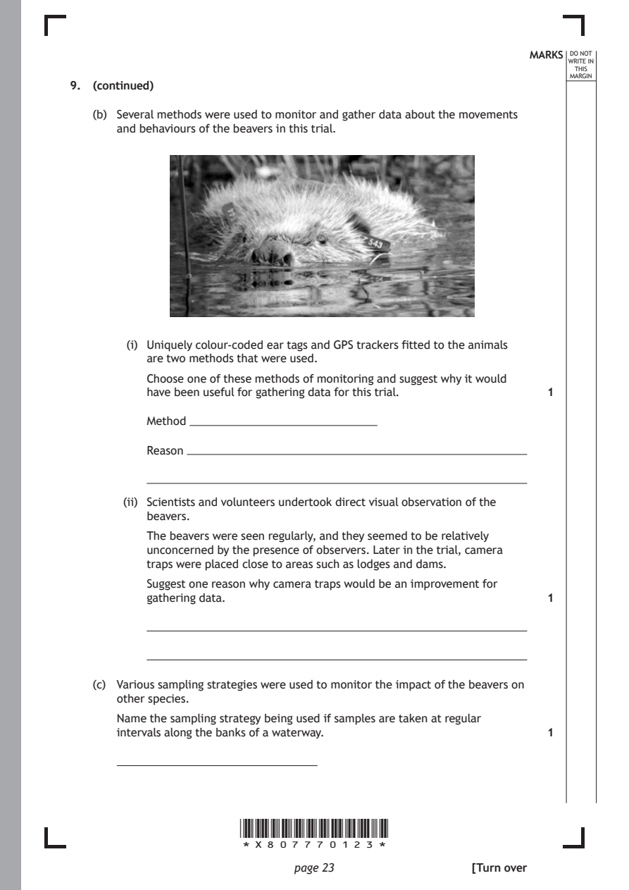
Selectable page text
MARKS _{W}^{D}_{R}^{O}_{I} _{T}^{N}OT
E IN
THIS
MARGIN
9. (continued)
(b) Several methods were used to monitor and gather data about the movements
and behaviours of the beavers in this trial.
(i) Uniquely colour‑coded ear tags and GPS trackers fitted to the animals
are two methods that were used.
Choose one of these methods of monitoring and suggest why it would
have been useful for gathering data for this trial. 1
Method
Reason
(ii) Scientists and volunteers undertook direct visual observation of the
beavers.
The beavers were seen regularly, and they seemed to be relatively
unconcerned by the presence of observers. Later in the trial, camera
traps were placed close to areas such as lodges and dams.
Suggest one reason why camera traps would be an improvement for
gathering data. 1
(c) Various sampling strategies were used to monitor the impact of the beavers on
other species.
Name the sampling strategy being used if samples are taken at regular
intervals along the banks of a waterway. 1
*X807770123*
page 23 [Turn overPDF page 24
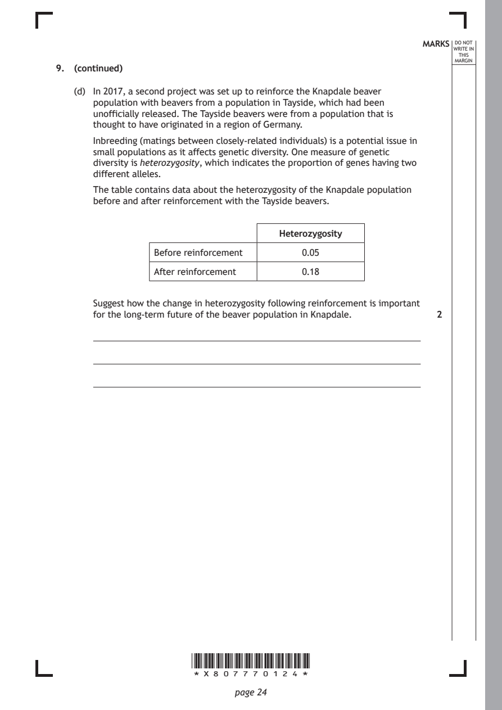
Selectable page text
MARKS _{W}^{D}_{R}^{O}_{I} _{T}^{N}OT
E IN
THIS
MARGIN
9. (continued)
(d) In 2017, a second project was set up to reinforce the Knapdale beaver
population with beavers from a population in Tayside, which had been
unofficially released. The Tayside beavers were from a population that is
thought to have originated in a region of Germany.
Inbreeding (matings between closely‑related individuals) is a potential issue in
small populations as it affects genetic diversity. One measure of genetic
diversity is heterozygosity, which indicates the proportion of genes having two
different alleles.
The table contains data about the heterozygosity of the Knapdale population
before and after reinforcement with the Tayside beavers.
Heterozygosity
Before reinforcement 0.05
After reinforcement 0.18
Suggest how the change in heterozygosity following reinforcement is important
for the long‑term future of the beaver population in Knapdale. 2
*X807770124*
page 24PDF page 25
Paper 2, Question 10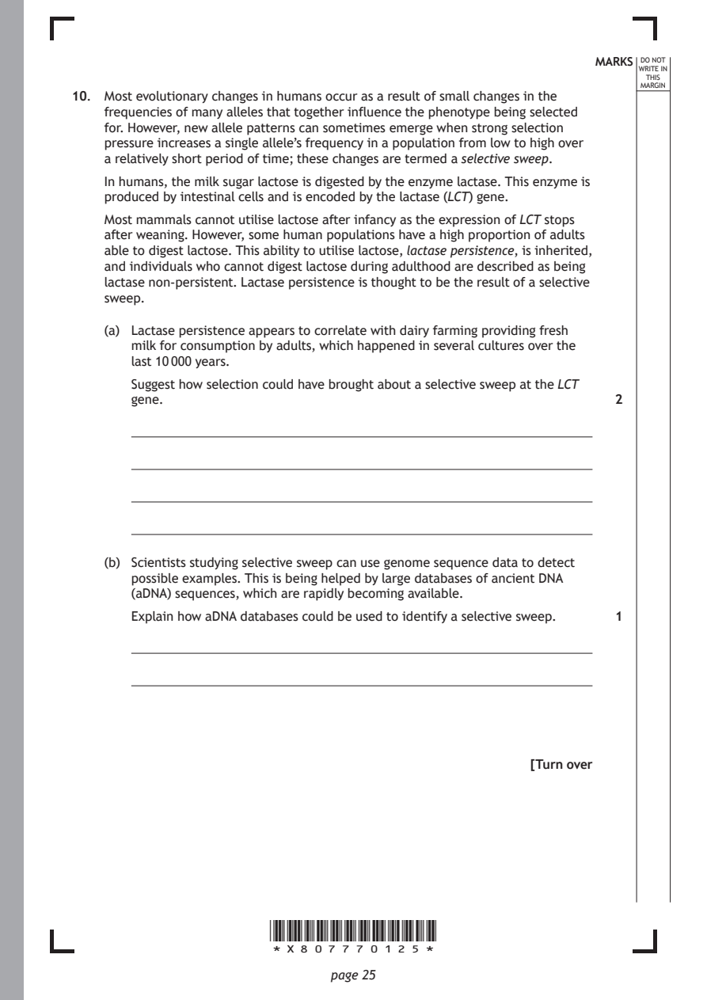
Selectable page text
MARKS _{W}^{D}_{R}^{O}_{I} _{T}^{N}OT
E IN
THIS
MARGIN
10. Most evolutionary changes in humans occur as a result of small changes in the
frequencies of many alleles that together influence the phenotype being selected
for. However, new allele patterns can sometimes emerge when strong selection
pressure increases a single allele’s frequency in a population from low to high over
a relatively short period of time; these changes are termed a selective sweep.
In humans, the milk sugar lactose is digested by the enzyme lactase. This enzyme is
produced by intestinal cells and is encoded by the lactase (LCT) gene.
Most mammals cannot utilise lactose after infancy as the expression of LCT stops
after weaning. However, some human populations have a high proportion of adults
able to digest lactose. This ability to utilise lactose, lactase persistence, is inherited,
and individuals who cannot digest lactose during adulthood are described as being
lactase non‑persistent. Lactase persistence is thought to be the result of a selective
sweep.
(a) Lactase persistence appears to correlate with dairy farming providing fresh
milk for consumption by adults, which happened in several cultures over the
last 10 000 years.
Suggest how selection could have brought about a selective sweep at the LCT
gene. 2
(b) Scientists studying selective sweep can use genome sequence data to detect
possible examples. This is being helped by large databases of ancient DNA
(aDNA) sequences, which are rapidly becoming available.
Explain how aDNA databases could be used to identify a selective sweep. 1
[Turn over
*X807770125*
page 25PDF page 26
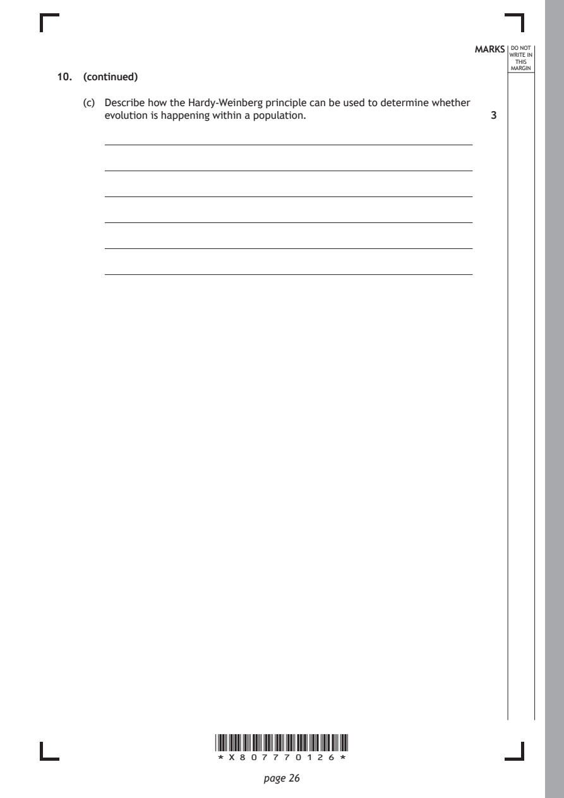
Selectable page text
MARKS _{W}^{D}_{R}^{O}_{I} _{T}^{N}OT
E IN
THIS
MARGIN
10. (continued)
(c) Describe how the Hardy‑Weinberg principle can be used to determine whether
evolution is happening within a population. 3
*X807770126*
page 26PDF page 27
Paper 2, Question 11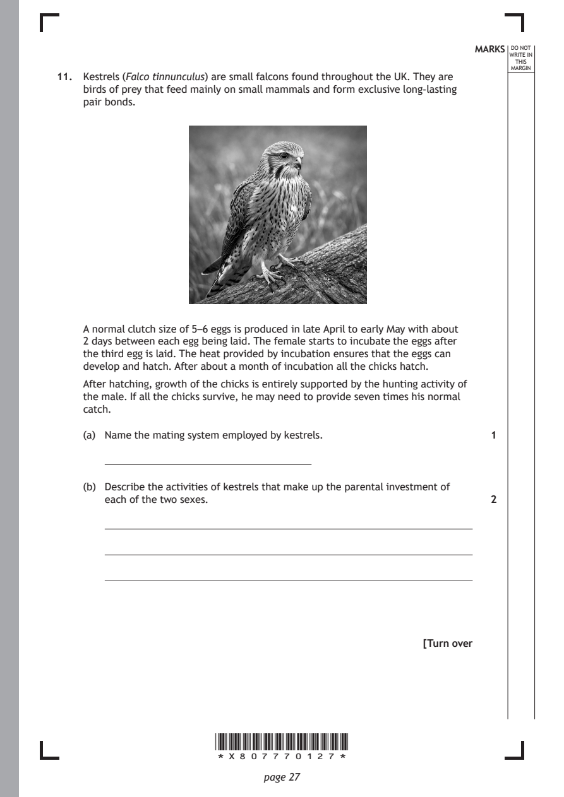
Selectable page text
MARKS _{W}^{D}_{R}^{O}_{I} _{T}^{N}OT
E IN
THIS
MARGIN
11. Kestrels (Falco tinnunculus) are small falcons found throughout the UK. They are
birds of prey that feed mainly on small mammals and form exclusive long‑lasting
pair bonds.
A normal clutch size of 5–6 eggs is produced in late April to early May with about
2 days between each egg being laid. The female starts to incubate the eggs after
the third egg is laid. The heat provided by incubation ensures that the eggs can
develop and hatch. After about a month of incubation all the chicks hatch.
After hatching, growth of the chicks is entirely supported by the hunting activity of
the male. If all the chicks survive, he may need to provide seven times his normal
catch.
(a) Name the mating system employed by kestrels. 1
(b) Describe the activities of kestrels that make up the parental investment of
each of the two sexes. 2
[Turn over
*X807770127*
page 27PDF page 28
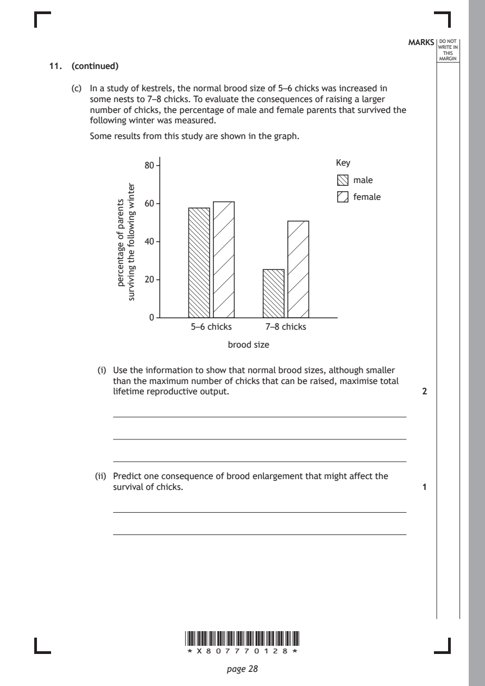
Selectable page text
MARKS _{W}^{D}_{R}^{O}_{I} _{T}^{N}OT
E IN
THIS
MARGIN
11. (continued)
(c) In a study of kestrels, the normal brood size of 5–6 chicks was increased in
some nests to 7–8 chicks. To evaluate the consequences of raising a larger
number of chicks, the percentage of male and female parents that survived the
following winter was measured.
Some results from this study are shown in the graph.
80
60
40
20
0
*X807770128*
page 28
stnerap
fo
egatnecrep
retniw
gniwollof
eht
gnivivrus
Key
male
female
5–6 chicks 7–8 chicks
brood size
(i) Use the information to show that normal brood sizes, although smaller
than the maximum number of chicks that can be raised, maximise total
lifetime reproductive output. 2
(ii) Predict one consequence of brood enlargement that might affect the
survival of chicks. 1PDF page 29
Paper 2, Question 12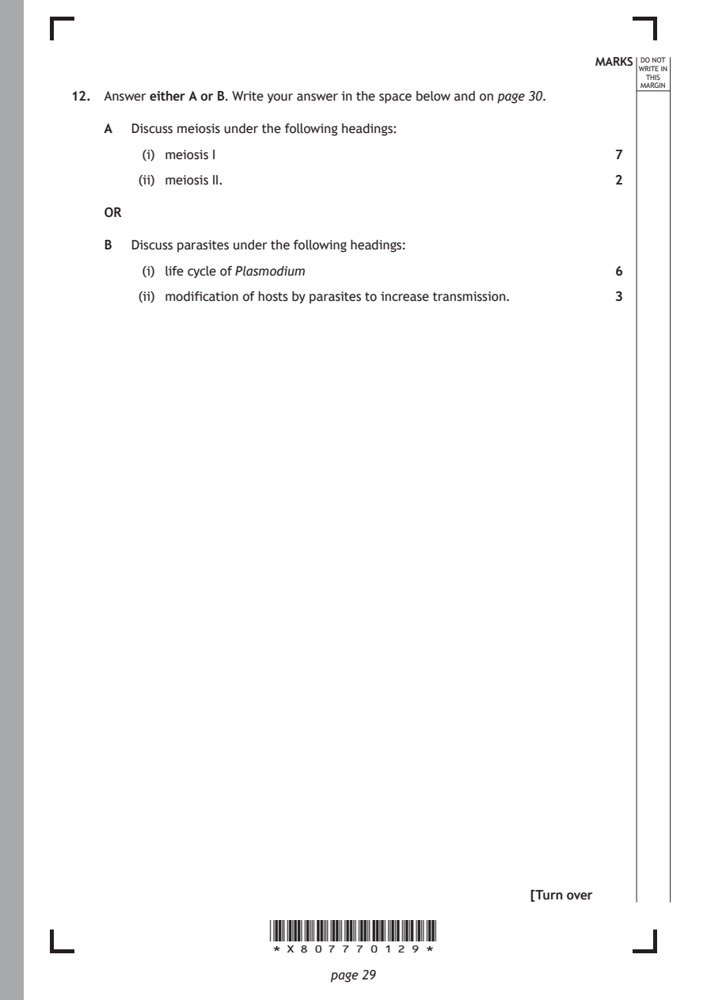
Selectable page text
MARKS _{W}^{D}_{R}^{O}_{I} _{T}^{N}OT
E IN
THIS
MARGIN
12. Answer either A or B. Write your answer in the space below and on page 30.
A Discuss meiosis under the following headings:
(i) meiosis I 7
(ii) meiosis II. 2
OR
B Discuss parasites under the following headings:
(i) life cycle of Plasmodium 6
(ii) modification of hosts by parasites to increase transmission. 3
[Turn over
*X807770129*
page 29PDF page 30
Selectable page text
MARKS _{W}^{D}_{R}^{O}_{I} _{T}^{N}OT
E IN
THIS
MARGIN
ADDITIONAL SPACE FOR ANSWER to question 12
[END OF QUESTION PAPER]
*X807770130*
page 30PDF page 31
Selectable page text
MARKS _{W}^{D}_{R}^{O}_{I} _{T}^{N}OT
E IN
THIS
MARGIN
ADDITIONAL SPACE FOR ANSWERS AND ROUGH WORK
*X807770131*
page 31PDF page 32
Selectable page text
MARKS _{W}^{D}_{R}^{O}_{I} _{T}^{N}OT
E IN
THIS
MARGIN
ADDITIONAL SPACE FOR ANSWERS AND ROUGH WORK
Acknowledgement of copyright
Question 3 Jesus Cobaleda/shutterstock.com
Question 7 (b) Cathy Keifer/shutterstock.com
Question 8 (b) GPPets/shutterstock.com
Question 9 Tommy Svensson/shutterstock.com
Question 9 (b) I mage of beaver is taken from https://scottishwildlifetrust.org.uk/2021/05/how-to-spot-a-
beaver-in-knapdale-forest/. Reproduced by kind permission of Scottish Wildlife Trust.
Question 11 Behramkhan03/shutterstock.com
*X807770132*
page 32